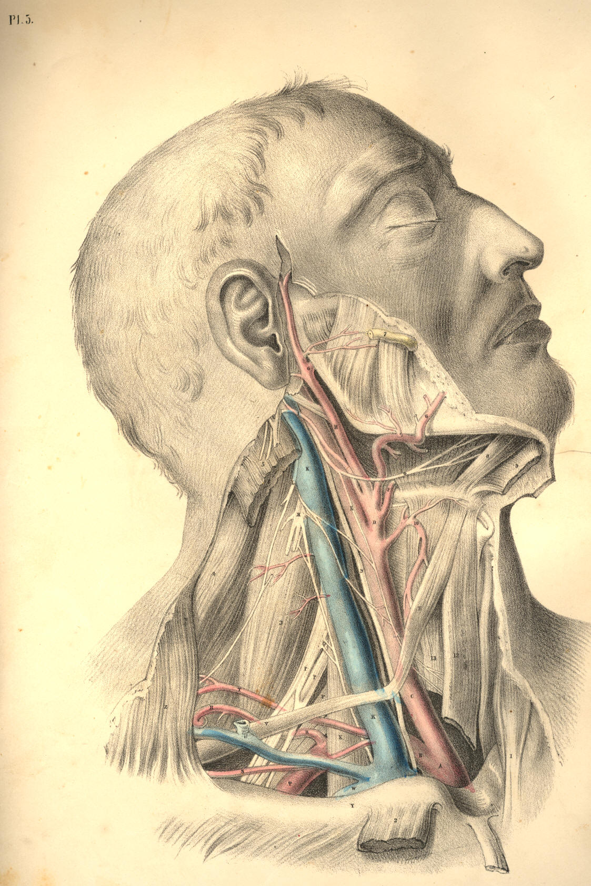
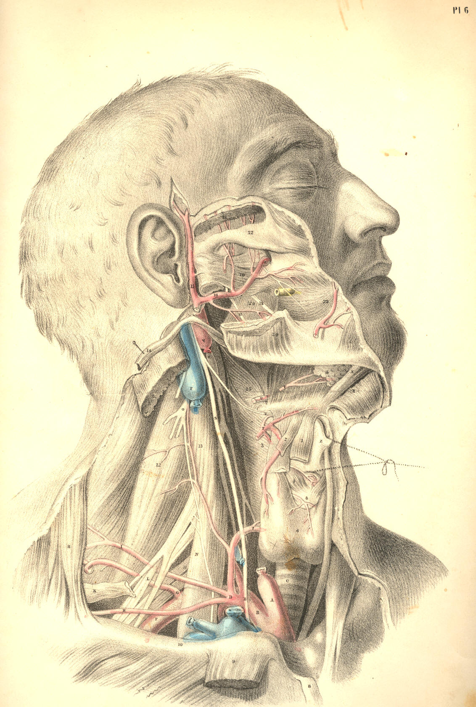

COMMENTARY ON PLATES 5 & 6.
THE SURGICAL FORM OF THE DEEP CERVICAL AND FACIAL REGIONS, AND
THE RELATIVE POSITION OF THE PRINCIPAL BLOODVESSELS AND
NERVES, &c.
While the human cervix is still extended in surgical position, its
deeper anatomical relations, viewed as a whole, preserve the
quadrilateral form. But as it is necessary to remove the
sterno-cleido-mastoid muscle, in order to expose the entire range of the
greater bloodvessels and nerves, so the diagonal which that muscle
forms, as seen in Plates 3 and 4, disappears, and thus both the cervical
triangles are thrown into one common region. Although, however, the
sterno-mastoid muscle be removed, as seen in Plate 5, still the great
bloodvessels and nerves themselves will be observed to divide the
cervical square diagonally, as they ascend the neck from the
sterno-clavicular articulation to the ear.
The diagonal of every square figure is the junction line of the opposite
triangles which form the square. The cervical square being indicated as
that space which lies within the mastoid process and the top of the
sternum--the symphysis of the lower maxilla and the top of the shoulder,
it will be seen, in Plate 5, that the line which the common carotid and
internal jugular vein occupy in the neck, is the diagonal; and hence the
junction line of the two surgical triangles.
The general course of the common carotid artery and internal jugular
vein is, therefore, obliquely backwards and upwards through the diagonal
of the cervical square, and passing, as it were, from the point of one
angle of the square to that of the opposite--viz., from the
sterno-clavicular junction to the masto-maxillary space; and, taking the
anterior triangle of the cervical square to be that space included
within the points marked H 8 A, Plate 5, it will be seen that the common
carotid artery ranges along the posterior side of this anterior
triangle. Again: taking the points 5 Z Y to mark the posterior triangle
of the cervical square, so will it be seen that the internal jugular
vein and the common carotid artery, with the vagus nerve between them,
range the anterior side of this posterior triangle, while the subclavian
artery, Q, passes through the centre of the inferior side of the
posterior triangle, that is, under the middle of the shaft of the
clavicle.
The main blood vessels (apparently according to original design) will be
found always to occupy the centre of the animal fabric, and to seek
deep-seated protection under cover of the osseous skeleton. The
vertebrae of the neck, like those of the back and loins, support the
principal vessels. Even in the limbs the large bloodvessels range
alongside the protective shafts of the bones. The skeletal points are
therefore the safest guides to the precise localities of the
bloodvessels, and such points are always within the easy recognition of
touch and sight.
Close behind the right sterno-clavicular articulation, but separated
from it by the sternal insertions of the thin ribbon-like muscles named
sterno-hyoid and thyroid, together with the cervical fascia, is situated
the brachio-cephalic or innominate artery, A B, Plates 5 and 6, having
at its outer side the internal jugular division of the brachio-cephalic
vein, W K, Plate 5. Between these vessels lies the vagus nerve, E, Plate
6, N, Plate 5. The common carotid artery, internal jugular vein, and
vagus nerve, hold in respect to each other the same relationship in the
neck, as far upwards as the angle of the jaw. While we view the general
lateral outline of the neck, we find that, in the same measure as the
blood vessels ascend from the thorax to the skull, they recede from the
fore-part of the root of the neck to the angle of the jaw, whereby a
much greater interval occurs between them and the mental symphysis, or
the apex of the thyroid cartilage, than happens between them and the top
of the sternum, as they lie at the root of the neck. This variation as
to the width of the interval between the vessels and fore-part of the
neck, in these two situations, is owing to two causes, 1st, the somewhat
oblique course taken by the vessels from below upwards; 2dly, the
projecting development of the adult lower jaw-bone, and also of the
laryngeal apparatus, which latter organ, as it grows to larger
proportions in the male than in the female, will cause the interval at
this place to be much greater in the one than the other. In the infant,
the larynx is of such small size, as scarcely to stand out beyond the
level of the vessels, viewed laterally.
The internal jugular vein is for almost its entire length covered by the
sterno-mastoid muscle, and by that layer of the cervical aponeurosis
which lies between the vessels and the muscle. The two vessels, K C,
Plate 5, with the vagus nerve, are enclosed in a common sheath of
cellular membrane, which sends processes between them so as to isolate
the structures in some degree from one another.
The trunk of the common carotid artery is in close proximity to the
vagus nerve, this latter lying at the vessel's posterior side. The
internal jugular vein, which sometimes lies upon and covering the
carotid, will be found in general separated from it for a little space.
Opposite the os hyoides, the internal jugular vein lies closer to the
common carotid than it does farther down towards the root of the neck.
Opposite to the sterno-clavicular articulation, the internal jugular
vein will be seen separated from the common carotid for an interval of
an inch and more in width, and at this interval appears the root of the
subclavian artery, B, Plates 5 and 6, giving off its primary branches,
viz., the thyroid axis, D, the vertebral and internal mammary arteries,
at the first part of its course.
The length of the common carotid artery varies, of course, according to
the place where the innominate artery below divides, and also according
to that place whereat the common carotid itself divides into internal
and external carotids. In general, the length of the common carotid is
considerable, and ranges between the sterno-clavicular articulation and
the level of the os hyoides; throughout the whole of this length, it
seldom or never happens that a large arterial branch is given off from
the vessel, and the operation of ligaturing the common carotid is
therefore much more likely to answer the results required of that
proceeding than can be expected from the ligature of any part of the
subclavian artery which gives off large arterial branches from every
part of its course.
The sympathetic nerve, R, Plate 6, is as close to the carotid artery
behind, as the vagus nerve, N, Plate 5, and is as much endangered in
ligaturing this vessel. The branch of the ninth nerve, E, Plate 5,
(descendens noni,) lies upon the common carotid, itself or its sheath,
and is likely to be included in the ligature oftener than we are aware
of.
The trunk of the external carotid, D, Plate 5, is in all cases very
short, and in many bodies can scarcely be said to exist, in consequence
of the thyroid, lingual, facial, temporal, and occipital branches,
springing directly from almost the same point at which the common
carotid gives off the internal carotid artery. The internal carotid is
certainly the continuation of the common arterial trunk, while the
vessel named external carotid is only a series of its branches. If the
greater size of the internal carotid artery, compared to that of the
external carotid, be not sufficient to prove that the former is the
proper continuation of the common carotid, a fact may be drawn from
comparative philosophy which will put the question beyond doubt,
namely--that as the common carotid follows the line of the cervical
vertebrae, just as the aorta follows that of the vertebrae of the trunk,
so does the internal carotid follow the line of the cephalic vertebrae.
I liken, therefore, those branches of the so-called external carotid to
be, as it were, the visceral arteries of the face and neck. It would be
quite possible to demonstrate this point of analogy, were this the place
for analogical reasoning.
The common carotid, or the internal, may be compressed against the
rectus capitis anticus major muscle, 13, Plate 6, as it lies on the
fore-part of the vertebral column. The internal maxillary artery, 16,
Plate 6, and the facial artery, G, Plate 5, are those vessels which
bleed when the lower maxilla is amputated. In this operation, the
temporal artery, 15, Plate 6, will hardly escape being divided also, it
lies in such close proximity to the neck and condyle of the jaw-bone.
The subclavian artery, B Q, Plate 5, traverses the root of the neck, in
an arched direction from the sterno-clavicular articulation to the
middle of the shaft of the clavicle, beneath which it passes, being
destined for the arm. In general, this vessel rises to a level
considerably above the clavicle; and all that portion of the arching
course which it makes at this situation over the first rib has become
the subject of operation. The middle of this arching subclavian artery
is (by as much as the thickness of the scalenus muscle, X, Plate 5)
deeper situated than either extremity of the arch of this vessel, and
deeper also than any part of the common carotid, by the same fact. So
many branches spring from all parts of the arch of the subclavian
artery, that the operation of ligaturing this vessel is less successful
than the same operation exercised on others.
The structures which lie in connexion with the arch of the subclavian
also render the operation of tying the vessel an anxious task. It is
crossed and recrossed at all points by large veins, important nerves,
and by its own principal branches. The vagus nerve, S E, Plate 6,
crosses it at B, its root; external to which place the large internal
jugular vein, K, Plate 5, lies upon it; external to this latter, the
scalenus muscle, X, Plate 5, with the phrenic nerve lying upon the
muscle, binds it fixedly to the first rib; more external still, the
common trunk of the external jugular and shoulder veins, U, Plate 5, lie
upon the vessel, and it is in the immediate vicinity of the great
brachial plexus of nerves, P P, which pass down along its humeral
border, many branches of the same plexus sometimes crossing it
anteriorly.
The depth at which the middle of the subclavian artery lies may be
learned by the space which those structures, beneath which it passes,
necessarily occupy. The clavicle at its sternal end is round and thick,
where it gives attachment to the sterno-cleido-mastoid muscle. The root
of the internal jugular vein, when injected, will be seen to occupy
considerable space behind the clavicle; and the anterior scalenus muscle
is substantial and fleshy. The united spaces occupied by these
structures give the depth of the subclavian artery in the middle part of
its course.
The length of the subclavian artery between its point of branching from
the innominate and that where it gives off its first branches varies in
different bodies, but is seldom so extensive as to assure the operator
of the ultimate success of the process of ligaturing the vessel. Above
and below D, Plate 6, the thyroid axis, come off the vertebral and
internal mammary arteries internal and anterior to the scalenus muscle.
External and posterior to the scalenus, a large vessel, the post
scapular, G, Plate 6, R, Plate 5, arises. If an aneurism attack any part
of this subclavian arch, it must be in close connexion with some one of
these branches. If a ligature is to be applied to any part of the arch,
it will seldom happen that it can be placed farther than half an inch
from some of these principal collateral branches.
When the shoulder is depressed, the clavicle follows it, and the
subclavian artery will be more exposed and more easily reached than if
the shoulder be elevated, as this latter movement raises the clavicle
over the locality of the vessel. Dupuytren alludes practically to the
different depths of the subclavian artery in subjects with short necks
and high shoulders, and those with long necks and pendent shoulders.
When the clavicle is depressed to the fullest extent, if then the
sterno-cleido-mastoid and scalenus muscles be relaxed by inclining the
head and neck towards the artery, I believe it may be possible to arrest
the flow of blood through the artery by compressing it against the first
rib, and this position will also facilitate the operation of ligaturing
the vessel.
The subclavian vein, W, Plate 5, is removed to some distance from the
artery, Q, Plate 5. The width of the scalenus muscle, X, separates the
vein from the artery. An instance is recorded by Blandin in which the
vein passed in company with the artery under the scalenus muscle.
DESCRIPTION OF PLATES 5 & 6.
PLATE 5.
A. Innominate artery at its point of bifurcation.
B. Subclavian artery crossed by the vagus nerve.
C. Common carotid artery with the vagus nerve at its outer side,
and
the descendens noni nerve lying on it.
D. External carotid artery.
E. Internal carotid artery with the descendens noni nerve lying
on it.
F. Lingual artery passing under the fibres of the hyo-glossus
muscle.
G. Tortuous facial artery.
H. Temporo-maxillary artery.
I. Occipital artery crossing the internal carotid artery and
jugular
vein.
K. Internal jugular vein crossed by some branches of the cervical
plexus, which join the descendens noni nerve.
L. Spinal accessory nerve, which pierces the sterno-mastoid
muscle, to
be distributed to it and the trapezius.
M. Cervical plexus of nerves giving off the phrenic nerve to
descend
the neck on the outer side of the internal jugular
vein and over the
scalenus muscle.
N. Vagus nerve between the carotid artery and internal jugular
vein.
O. Ninth or hypoglossal nerve distributed to the muscles of the
tongue.
P P. Branches of the brachial plexus of nerves.
Q. Subclavian artery in connexion with the brachial plexus of
nerves.
R R. Post scapular artery passing through the brachial plexus.
S. Transversalis humeri artery.
T. Transversalis colli artery.
U. Union of the post scapular and external jugular veins, which
enter
the subclavian vein by a common trunk.
V. Post-half of the omo-hyoid muscle.
W. Part of the subclavian vein seen above the clavicle.
X. Scalenus muscle separating the subclavian artery from vein.
Y. Clavicle.
Z. Trapezius muscle.
1. Sternal origin of sterno-mastoid muscle of left side.
2. Clavicular origin of sterno-mastoid muscle of right side turned
down.
3. Scalenus posticus muscle.
4. Splenius muscle.
5. Mastoid insertion of sterno-mastoid muscle.
6. Internal maxillary artery passing behind the neck of lower
jaw-bone.
7. Parotid duct.
8. Genio-hyoid muscle.
9. Mylo-hyoid muscle, cut and turned aside.
10. Superior thyroid artery.
11. Anterior half of omo-hyoid muscle.
12. Sterno-hyoid muscle, cut.
13. Sterno-thyroid muscle, cut.

Plate 5
PLATE 6.
A. Root of the common carotid artery.
B. Subclavian artery at its origin.
C. Trachea.
D. Thyroid axis of the subclavian artery.
E. Vagus nerve crossing the origin of subclavian artery.
F. Subclavian artery at the third division of its arch.
G. Post scapular branch of the subclavian artery.
H. Transversalis humeri branch of subclavian artery.
I. Transversalis colli branch of subclavian artery.
K. Posterior belly of omo-hyoid muscle, cut.
L. Median nerve branch of brachial plexus.
M. Musculo-spiral branch of same plexus.
N. Anterior scalenus muscle.
O. Cervical plexus giving off the phrenic nerve, which takes
tributary
branches from brachial plexus of nerves.
P. Upper part of internal jugular vein.
Q. Upper part of internal carotid artery.
R. Superior cervical ganglion of sympathetic nerve.
S. Vagus nerve lying external to sympathetic nerve, and giving
off t
its laryngeal branch.
T. Superior thyroid artery.
U. Lingual artery separated by hyo-glossus muscle from
V. Lingual or ninth cerebral nerve.
W. Sublingual salivary gland.
X. Genio-hyoid muscle.
Y. Mylo-hyoid muscle, cut and turned aside.
Z. Thyroid cartilage.
1. Upper part of sterno-hyoid muscle.
2. Upper part of omo-hyoid muscle.
3. Inferior constrictor of pharynx.
4. Cricoid cartilage.
5. Crico-thyroid muscle.
6. Thyroid body.
7. Inferior thyroid artery of thyroid axis.
8. Sternal tendon of sterno-mastoid muscle, turned down.
9. Clavicular portion of sterno-mastoid muscle, turned down.
10. Clavicle.
11. Trapezius muscle.
12. Scalenus posticus muscle.
13. Rectus capitis anticus major muscle.
14. Stylo-hyoid muscle, turned aside.
15. Temporal artery.
16. Internal maxillary artery.
17. Inferior dental branch of fifth pair of cerebral nerves.
18. Gustatory branch of fifth pair of nerves.
19. External pterygoid muscle.
20. Internal pterygoid muscle.
21. Temporal muscle cut to show the deep temporal branches of fifth pair
of nerves.
22. Zygomatic arch.
23. Buccinator muscle, with buccal nerve and parotid duct.
24. Masseter muscle cut on the lower maxilla.
25. Middle constrictor of pharynx.

Plate 6
COMMENTARY ON PLATES 7
& 8